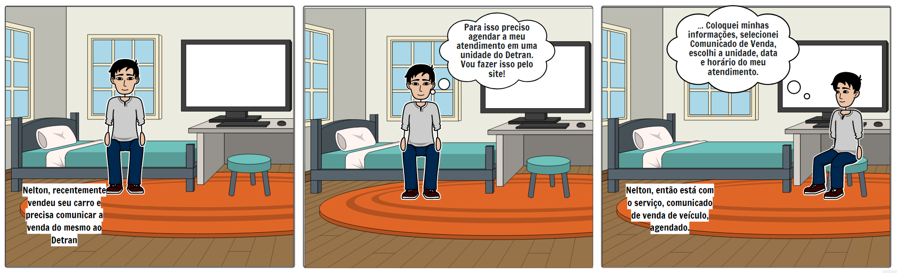
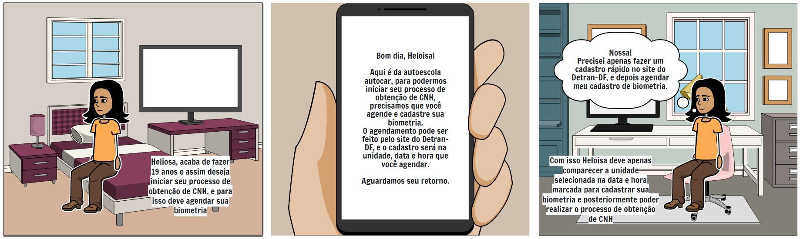
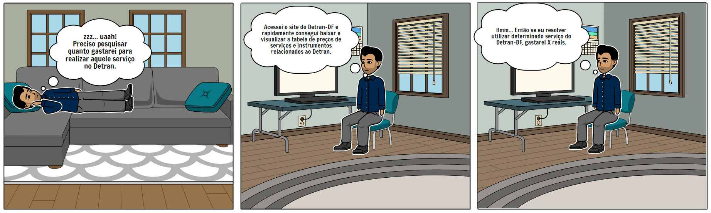
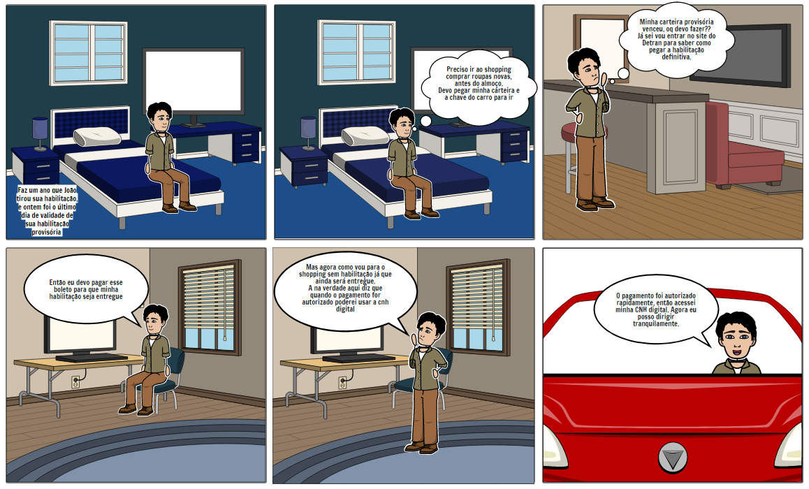

Storyboards
1. Introdução
Storyboard é um protótipo de baixa fidelidade usado em conjunto geralmente com cenários. Ele deve ilustrar um objetivo através de desenhos que mostram o fluxo de execução de uma tarefa.
Um storyboard deve ter:
- Pessoas envolvidas;
- Ambiente;
- Tarefa a ser feita;
- Passos para realizar a tarefa;
- O que motiva os usuários a usar o sistema.
2. Resultados
A seguir encontra-se storyboards criados com a ferramenta storyboard that desenvolvidos a partir da análise de tarefas.
2.1 Storyboard 1 - Agendar Serviço
Preparo
Pessoas envolvidas:
- Persona: Nelton Ribeiro Filho
Ambiente da história:
- Quarto de Nelton
Tarefa a ser abordada:
- Agendar serviço no portal Detran-DF
Sequência
Quais passos para a realização da tarefa:
- 1- Necessita comunicar ao Dentran-DF que vendeu seu carro
- 2- Acessar portal Detran-DF
- 3- Agendar Serviço
Satisfação
Motivação principal da pessoa que usa a aplicação:
- Agendar serviço online para informar que vendeu seu carro
Definição das realizações que a aplicação permite:
- Agendar Serviço
Definição das necessidades que a aplicação se propõe a sanar:
- Permitir o agendamento de serviços online

{kind=link}
2.2 Storyboard 2 - Agendar Biometria
Preparo
Pessoas envolvidas:
- Persona: Eloisa Feitosa
Ambiente da história:
- Quarto de Eloisa
Tarefa a ser abordada:
- Agendar Biometria no portal Detran-DF
Sequência
Quais passos para a realização da tarefa:
- 1- Autoescola informa que é necessário agendar biometria
- 2- Acessar portal Detran-DF
- 3- Agendar Biometria
Satisfação
Motivação principal da pessoa que usa a aplicação:
- Agendar biometria para registro de CNH
Definição das realizações que a aplicação permite:
- Agendar biometria
Definição das necessidades que a aplicação se propõe a sanar:
- Permitir o agendamento da biometria online

{kind=link}
2.3 Storyboard 3 - Acessar Informação
Preparo
Pessoas envolvidas:
- Persona: José Fernandes
Ambiente da história:
- Casa de José
Tarefa a ser abordada:
- Acessar preço de serviço no portal Detran-DF
Sequência
Quais passos para a realização da tarefa:
- 1- Necessário acessar portal Detran-DF para saber preço de serviço
- 2- Acessar portal Detran-DF
- 3- Baixar arquivo com tabela de preços de serviços
Satisfação
Motivação principal da pessoa que usa a aplicação:
- Acessar informação sobre preço de serviços
Definição das realizações que a aplicação permite:
- Acesso a informações de preços de serviços
Definição das necessidades que a aplicação se propõe a sanar:
- Permitir o acesso a informações de preços de serviços

{kind=link}
2.4 Storyboard 4 - Solicitar CHN definitiva
Preparo
Pessoas envolvidas:
- Persona: João Paulo
Ambiente da história:
- Casa de João
Tarefa a ser abordada:
- Solicitar CHN definitiva
Sequência
Quais passos para a realização da tarefa:
- 1- CNH provisória de João venceu
- 2- João se questiona sobre dirigir com CHN vencida
- 3- João consulta portal Detran-DF para obter informações sobre como solicitar CNH definitiva
- 4- João acessa portal Detran-DF e emite borderô com taxa para solicitação de CHN definitiva
- 5- João se questiona sobre quando poderá dirigir novamente
- 6- Pagamento de João foi autorizado e ele já pode dirigir novamente
Satisfação
Motivação principal da pessoa que usa a aplicação:
- Solicitar CHN definitiva
Definição das realizações que a aplicação permite:
- Solicitação de CHN definitiva
Definição das necessidades que a aplicação se propõe a sanar:
- Permitir a solicitação de CHN definitiva

{kind=link}
Referências bibliográficas
Barbosa, S. D. J.; Silva, B. S. da; Silveira, M. S.; Gasparini, I.; Darin, T.; Barbosa, G. D. J. (2021) Interação Humano-Computador e Experiência do usuário. Autopublicação.
Versionamento
| Versão | Data | Modificação | Autor |
|---|---|---|---|
| 1.0 | 09/09/2021 | Criação do documento | Carlos e Matheus |
| 1.1 | 09/09/2021 | Adição dos resultados | Carlos e Matheus |